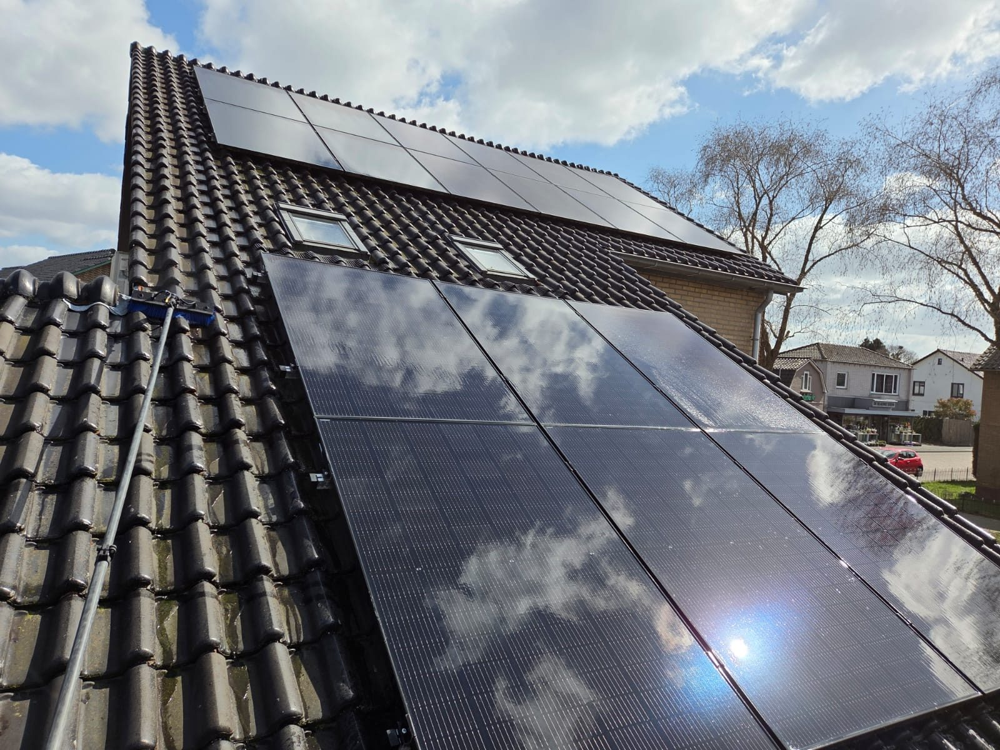
Vuile panelen leveren tot wel 30% minder op. Wij maken ze vakkundig en veilig schoon, zodat uw rendement weer maximaal is, en uw dak langer meegaat.
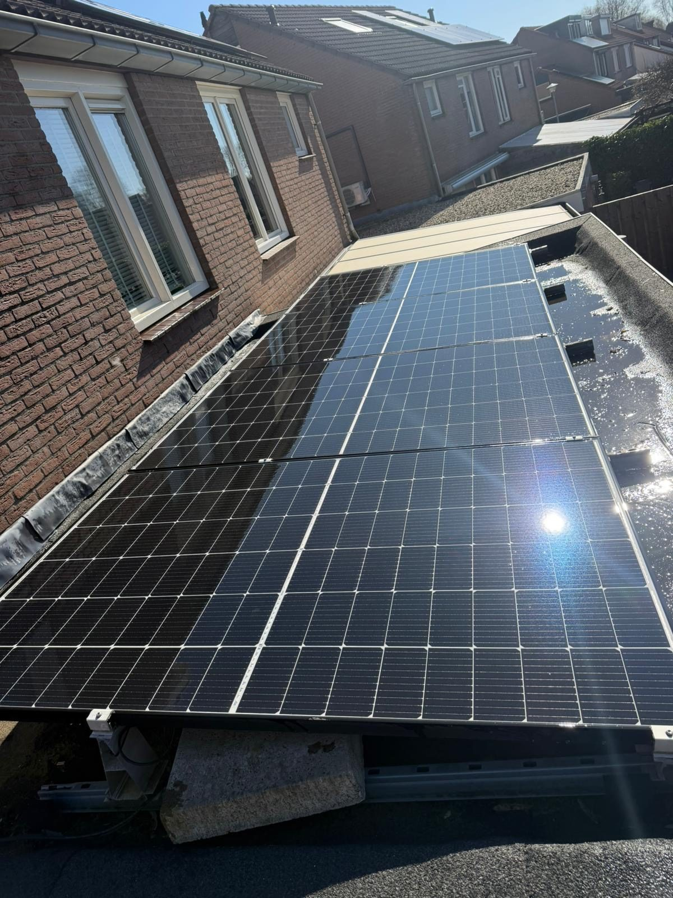
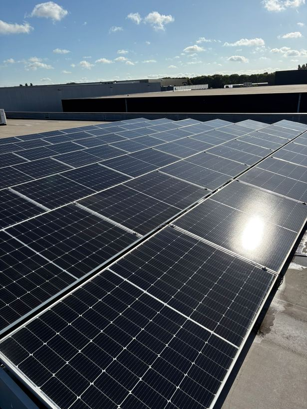
Stof, bladeren, vogelpoep en aanslag verminderen de opbrengst van uw zonnepanelen flink. Met speciaal, krasvrij materiaal en zuiver osmosewater reinigen wij uw panelen streeploos, zonder agressieve middelen die de coating aantasten.
Ook uw dak nemen we onder handen: we verwijderen mos, algen en vuil, zodat uw dakbedekking langer meegaat en weer netjes oogt.
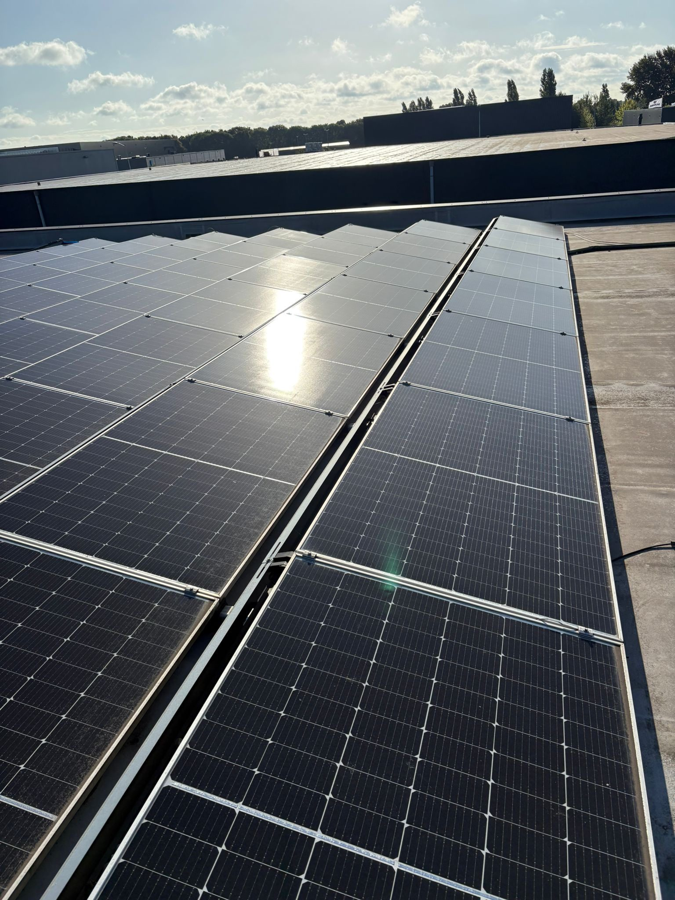
De meeropbrengst van schone panelen betaalt de reiniging vaak ruimschoots terug. Een slimme, duurzame investering in uw installatie.
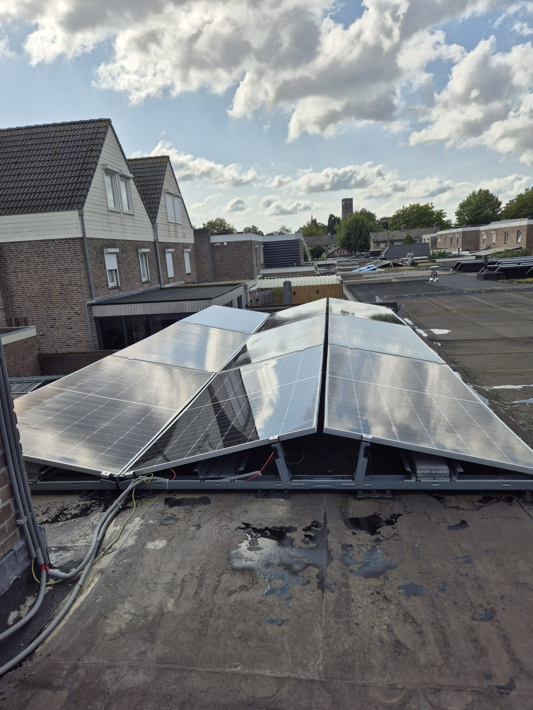
Schone panelen vangen meer licht en leveren merkbaar meer stroom.
Gecertificeerd, met professionele valbeveiliging en de juiste apparatuur.
Osmosewater laat geen kalkstrepen na en beschermt de coating.
Mos- en algverwijdering verlengt de levensduur van uw dak.
We beoordelen dak, panelen en bereikbaarheid en bepalen de veilige aanpak.
Heldere prijs op basis van oppervlak, hoogte en vervuilingsgraad.
Veilig en krasvrij met osmosewater en de juiste borstels.
Stralende panelen en een net dak, met advies voor onderhoud.
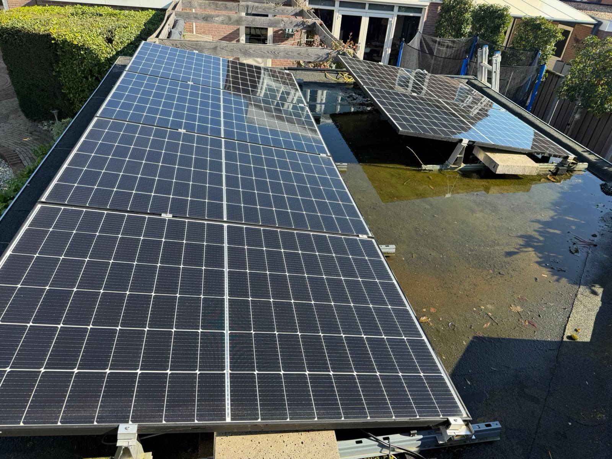
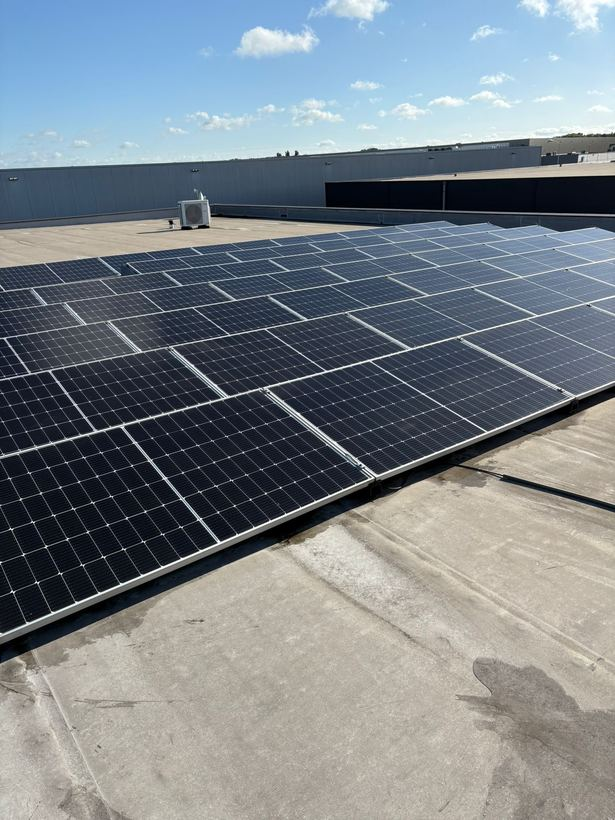
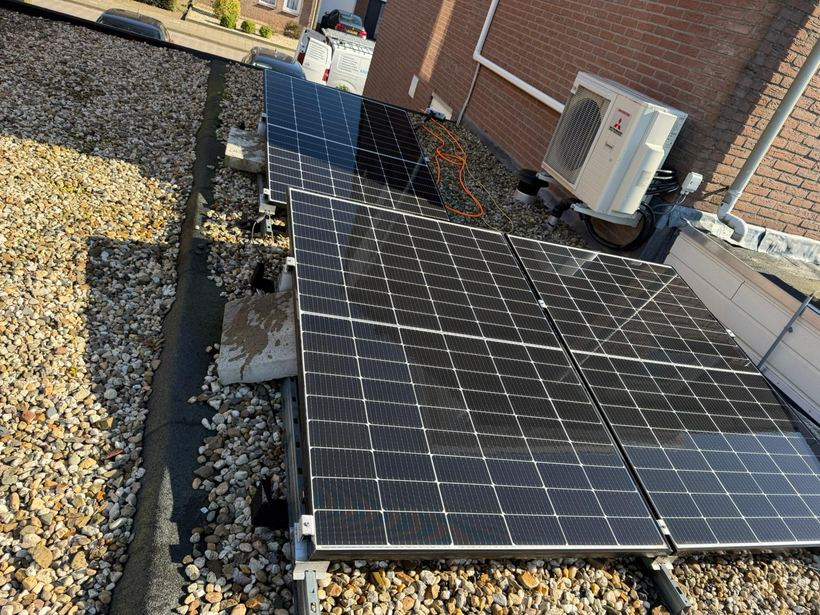
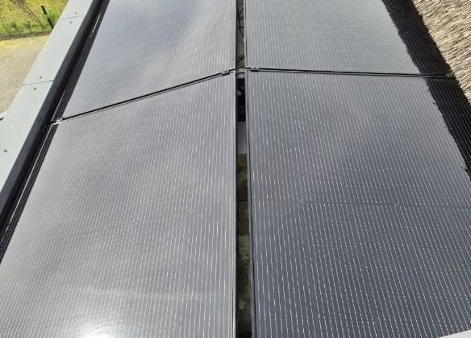
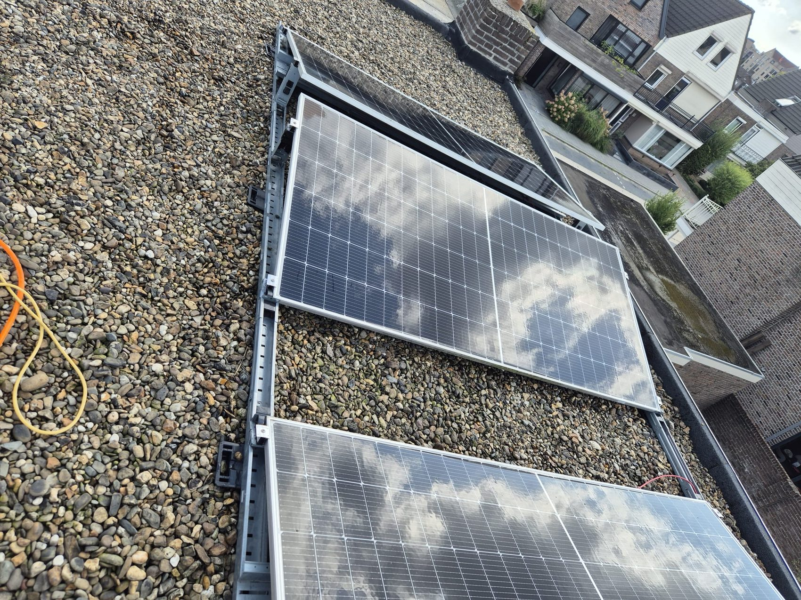
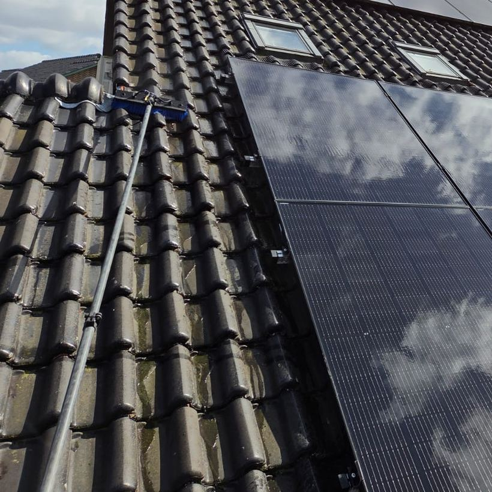
"De panelen liggen er weer stralend bij en we zien het direct terug in de opbrengst. Netjes en veilig gewerkt."
Vraag een gratis en vrijblijvende offerte aan voor het reinigen van uw panelen en dak.